Самый короткий
Entschuldigung, wo ist der Bahnhof?
Извините, где вокзал?
Entschuldigung — обязательно. Без него это не вопрос. Это наезд.
01.
Wo ıst der Bahnhof?
По-немецки. С картой, анимацией и одним человеком, который однажды пошел не туда.
Начать урокЯ переехал в Германию. В Германии есть вокзал. Вокзал я искал сорок минут.
У меня был гугл-мапс. Гугл-мапс сел. Вместе с телефоном. В 8:15 утра, на перекрестке, с чемоданом.
Подхожу к мужику. Мужик в жилетке, с таксой. Говорю, экскузи. Он говорит, битте. Говорю, бахнхоф. Одно слово. Как пароль.
Мужик оживился. Мужик был рад помочь. Мужик объяснял минуты две. Показывал руками. Дергал таксу. Такса тоже что-то показывала.
Из всего я понял одно слово. Links. Думаю, блять, ну хоть что-то. Кивнул. Сказал данке. И уверенно пошел направо.
Вокзал я нашел. Поезд — нет.
Этот урок — чтобы у вас таких цифр не было. Спрашивать будем целым предложением. Понимать — больше одного слова. Links — это налево. Запомнили? Я — со второго раза.
Четыре вопроса. Хватит на любой город. От Берлина до деревни, где один светофор и тот на ремонте.
Entschuldigung, wo ist der Bahnhof?
Извините, где вокзал?
Entschuldigung — обязательно. Без него это не вопрос. Это наезд.
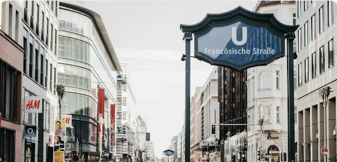
Wie komme ich zum Bahnhof?
Как мне пройти к вокзалу?
Буквально: как я приду к вокзалу. Тут спрятан zum. Про него ниже, он того стоит.
Gibt es hier in der Nähe eine Apotheke?
Здесь поблизости есть аптека?
eine, а не die. Вам не нужна конкретная аптека. Вам нужна любая. Желательно открытая.
Ist das weit von hier?
Это далеко отсюда?
Немец ответит: nicht weit. Не верьте. Уточните: Wie lange dauert das zu Fuß? — сколько идти пешком.
Вежливый апгрейд: Könnten Sie mir bitte sagen, wo der Bahnhof ist? — ist уезжает в конец. Придаточное. Немцы так любят. Звучит как человек, который знает Konjunktiv. Вы теперь знаете.
zu всегда тащит за собой Dativ. А немцы не любят лишние буквы. Поэтому склеивают. Смотрите по шагам.
Wie komme ich zudem Bahnhof?не склеивается
zu + dem = zum. Две буквы исчезли. Никто не заметил.
Wie komme ich ___ Apotheke?
Подсказка: die Apotheke
Я сначала думал, zum и zur — это два разных слова. Как Zoom и Uber. Нет. Это zu, который съел артикль.
Двенадцать слов. На них держится любой маршрут. Нажмите на карточку — услышите, как это звучит.
links
налево. Налево!
Нажмите на любую карточку — стрелка повернется, а слово прозвучит.
an der Ampel, an der Ecke, neben der Post. Вопрос «где?». Отвечает Dativ.
durch den Park, über die Brücke, über die Straße. durch вообще не спрашивает. Всегда Akkusativ.
bis zur Ampel, bis zum Marktplatz. Опять zu. Опять склейка. Вы уже умеете.
Объяснять маршрут — значит командовать. Вежливо. Глагол вперед, Sie сразу за ним. И одна приставка, которая сбегает.
Между глаголом и ab — всё остальное: где и куда. Готово. Вы только что объяснили дорогу.
nehmen в du-форме — nimm. Не nehm. Немцы решили, что так красивее. Спорить с ними я пробовал. Не советую.
Вы спросили. Вам объяснили. Теперь пройдем это вместе. По шагам. Налево — это налево.
Entschuldigung, wie komme ich zum Bahnhof?
Извините, как пройти к вокзалу?
Это вы. Вы молодец. Вы спросили целым предложением. Дальше — ответ прохожего.
Немцы объясняют быстро. Это нормально. Ненормально — кивнуть и пойти направо. Проверено.
Переспросить — не стыдно. Немцы переспрашивают друг друга постоянно. Стыдно — кивать две минуты, а потом стоять на вокзале и смотреть, как уезжает твой поезд.
Шесть вопросов. После каждого — разбор: почему так, а не иначе. Как на платформе.
«Сверните на светофоре налево». Нажимайте на слова по порядку.
Вопросы, которые мне задавали. И которые я задавал сам. Иногда вслух, на улице.
Можно. Вас поймут. Но ответ будет таким же коротким: рукой. Хотите нормальный ответ — задайте нормальный вопрос: Wie komme ich zum Bahnhof? Пять слов. Сорок минут экономии.
К незнакомым взрослым — Sie. Всегда. du — детям, друзьям и в Берлине после двух ночи. Сомневаетесь — Sie. Никто еще не обиделся на Sie.
nach — города, страны и направления без артикля: nach Berlin, nach Hause, nach links. zu — места и люди: zum Bahnhof, zur Post, zum Arzt. «Nach Bahnhof» — ошибка. Частая. Я делал.
Оба правильно. nach links — чуть подробнее. Смысл один: налево. Главное — не направо.
Welcher Bus fährt zum Bahnhof? — какой автобус идет до вокзала. Wo ist die nächste Haltestelle? — где ближайшая остановка. Muss ich umsteigen? — нужна пересадка?
По правилу: gegenüber dem Supermarkt, это Dativ. В разговоре немцы часто говорят gegenüber vom. Оба варианта живые. Вас поймут в обоих случаях.
Открыть свою карту и спросить: Hier? Немцы любят показывать пальцем в чужой телефон. Это их тайная страсть. Если телефон сел — см. историю выше.
A1–A2. Тема постоянно всплывает в разговорной части экзаменов. Попросят спросить дорогу или объяснить. Теперь сможете и то, и другое.
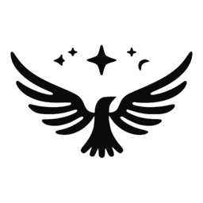
StellasУ меня был Duolingo. Duolingo у меня был 412 дней подряд. Сова мной гордилась. Сова присылала огонечки.
Потом у меня спросили дорогу. Меня. Немецкая бабушка. Я сказал Entschuldigung. И показал рукой.
Бабушка ушла туда, куда я показал.
Я до сих пор не знаю, дошла ли она. Сова тоже не знает.
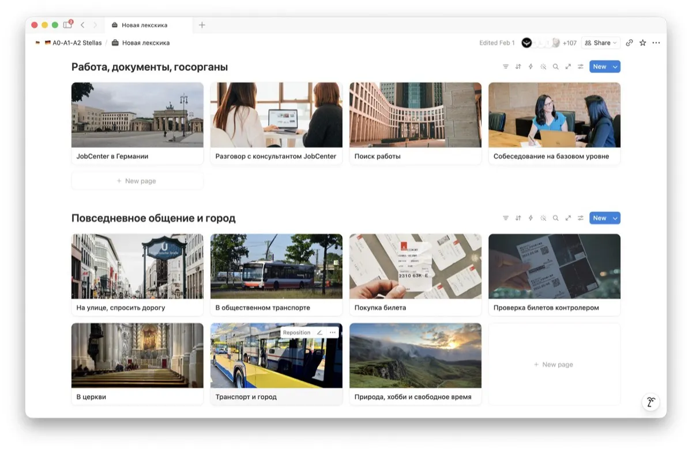
← этот урокНе потому что вы не способны. Потому что учите не там и не так. Пять причин. Узнаете хотя бы одну.
Слова без ситуации не всплывают, когда нужно. Apfel вы знаете. Как спросить, где яблоки, — нет.
На платформе: лексика по ситуациям — улица, транспорт, больница, работа. Готовые фразы, диалоги и 7500+ слов с озвучкой и транскрипцией.
Группа из 15 человек. Созвон в неудобное время. Олег опять рассказывает про выходные.
На платформе: ваш темп и ваше время. Каждый гайд: объяснение, видео, упражнения и разбор ответов. Без Олега.
Таблицы, исключения, сноски к исключениям. Закрыли книгу — забыли всё.
На платформе: 340+ гайдов от A0 до C1, объясненных так же, как этот урок. К гайдам есть интерактивные версии: озвучка, упражнения, проверка ИИ.
Двадцать минут в U-Bahn. Приложение крутит загрузку. Вы смотрите в окно. В окне туннель.
На платформе: всё в Notion. Скачали приложение — занимаетесь оффлайн, с телефона или ноутбука.
Тут тест, там аудио, в третьем месте образец письма. Половину закладок вы уже не найдете.
На платформе: раздел «Экзамены» — Goethe, telc, DTZ, ÖSD, TestDaF. Плюс трекер прогресса, флеш-карты, фильмы, книги и подкасты, отсортированные по уровню.
Час с репетитором — 30–40 €. Платформа A0–C1 — 30 €. Один раз. Навсегда. Сова Никто не расстроится, если вы пропустите день.
Настоящие записи экрана. Никаких макетов. Как выглядит, так и работает.
Интерактивные гайды. Словарь с озвучкой, фразы, диалоги, тест с разбором и чат с ИИ-собеседником. Пишете по-немецки — он отвечает в образе.
С телефона. Артикли цветом, карточки с иконками, озвучка по нажатию. Пять минут в очереди — уже занятие.
Транспорт, деньги, профессия, «Узнать дорогу». С фото, фразами и упражнениями.
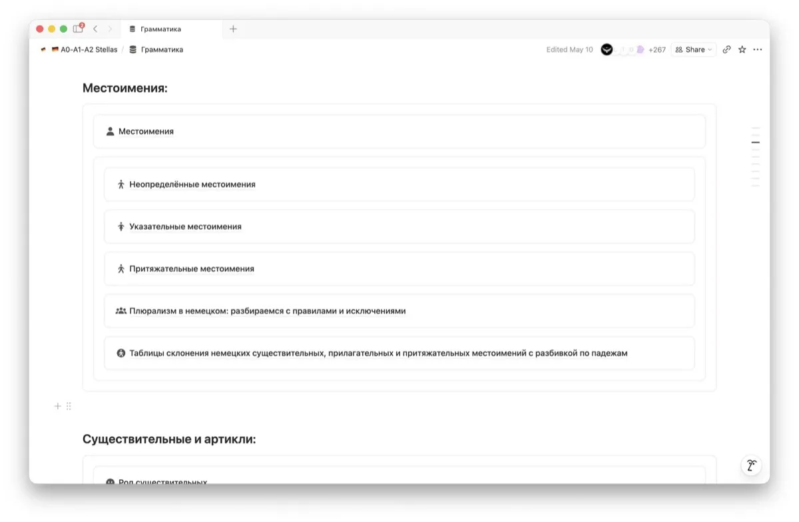
Объяснение как на канале, видео, упражнения и наш разбор ответов.
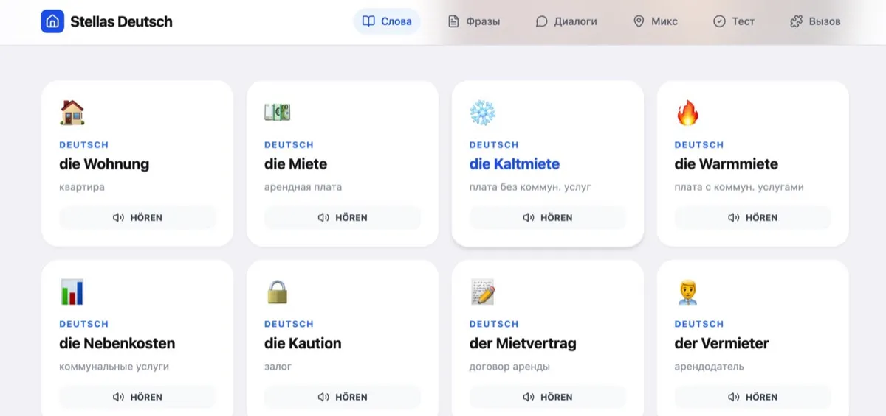
Каждое слово можно послушать. Не просто список — реально на слух.
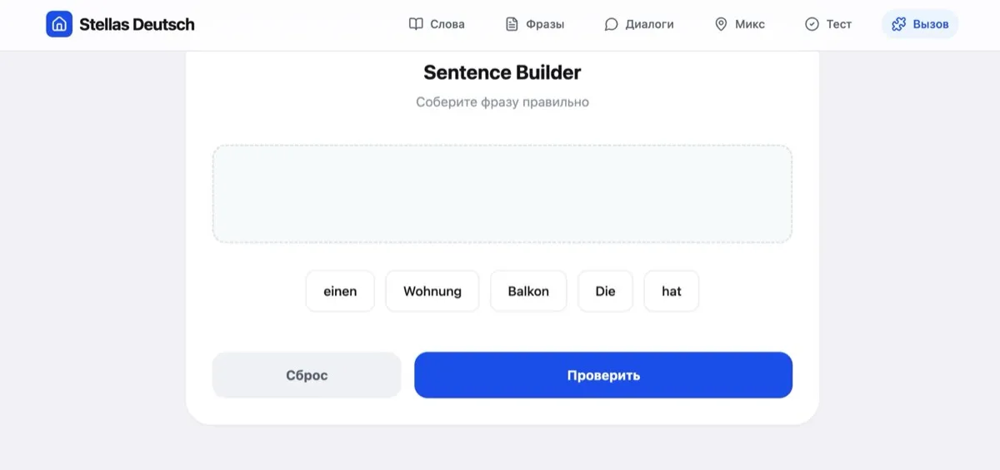
Как упражнение выше, только их больше. Ошибку подсветит, правильный вариант озвучит.
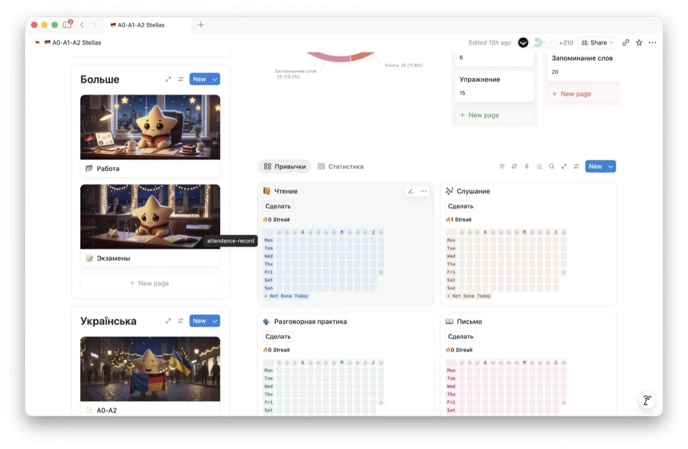
Ставите цель, отмечаете занятия, видите результат. Чтение, слушание, письмо — отдельно.
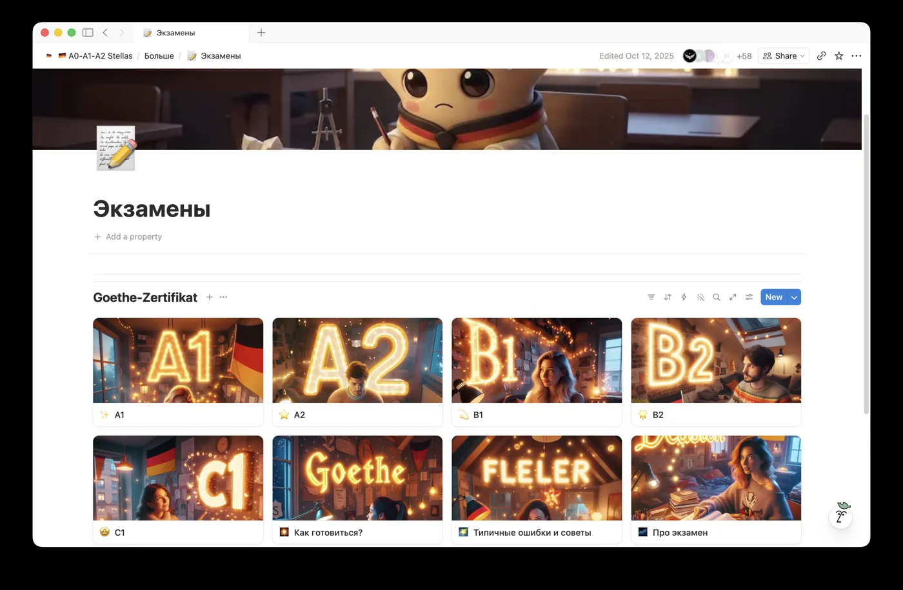
Отдельные блоки по сертификатам. Всё в одном месте.
Скриншоты из переписки. Без фотошопа. Мы бы и не смогли.
Листайте вбок →
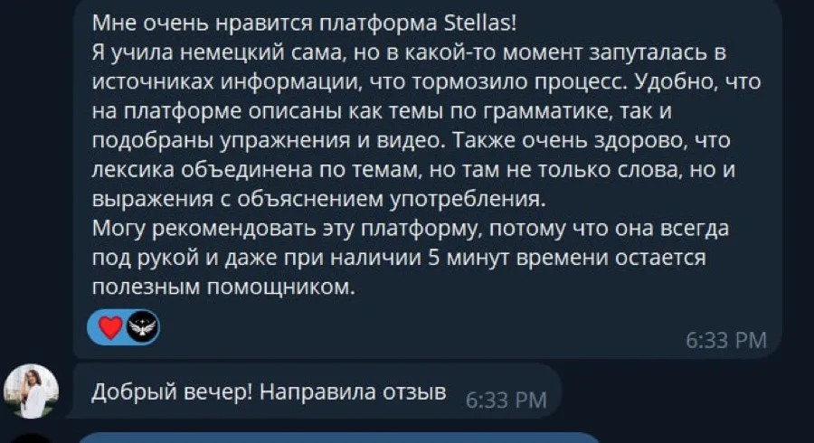
«Даже при наличии 5 минут остается полезным помощником»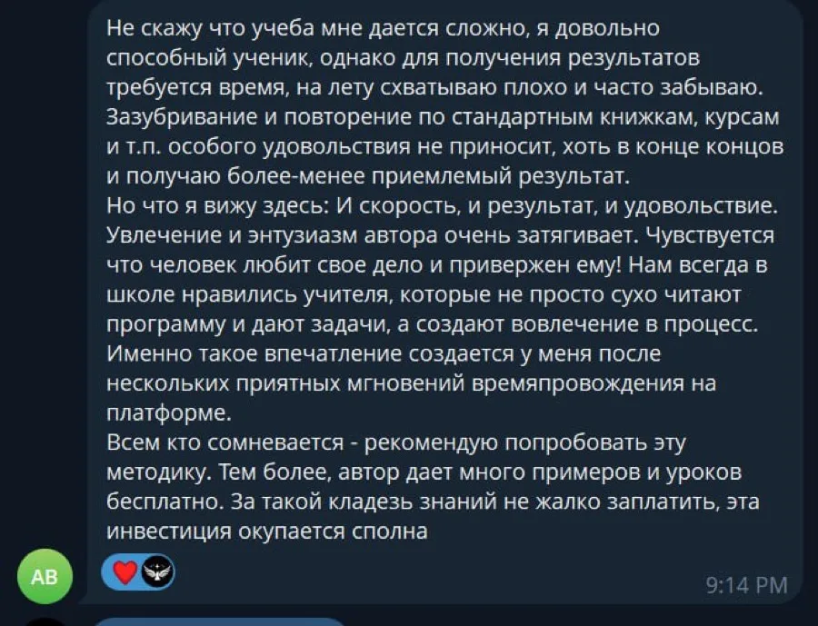
«И скорость, и результат, и удовольствие» «Перебрала много ресурсов, помимо интеграционных курсов»
«Перебрала много ресурсов, помимо интеграционных курсов» «Легко учиться и не теряться»
«Легко учиться и не теряться»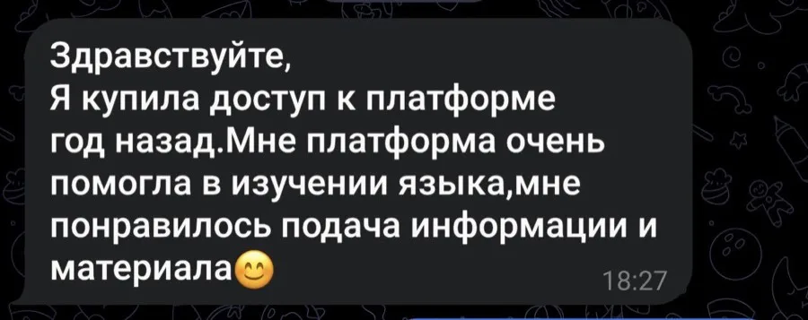
«Купила доступ год назад»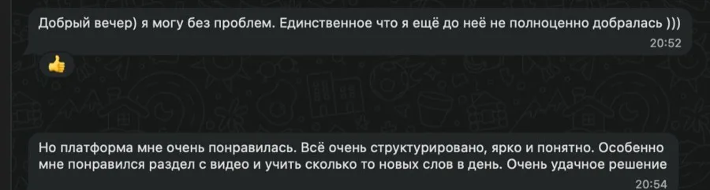
«Очень удачное решение»Один раз. Навсегда. Все обновления — бесплатно для тех, кто уже купил.
Цену планируем поднять после следующих обновлений. Кто купил раньше — получает всё новое бесплатно.
И понять ответ целиком, а не одно слово links. Этот урок — начало. Остальные 340+ — на платформе.
Забрать платформуСпросить дорогу вы теперь можете. Выучить остальное — на платформе. Вопросы — пишите в личку.
Платформа A0–C1 · 30 €